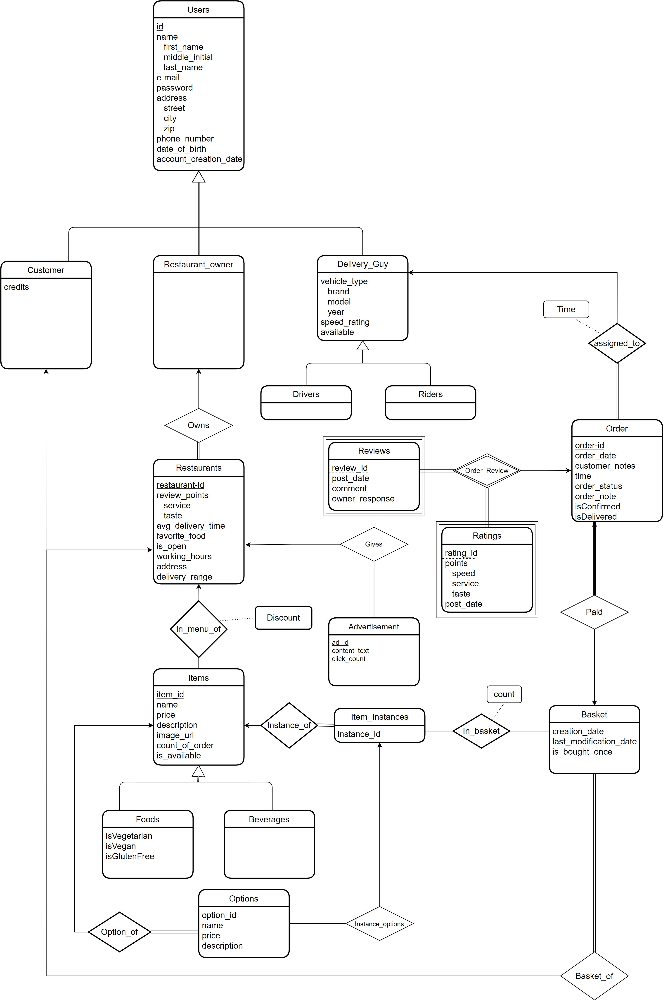

Introduction
Online food ordering and delivery platforms are websites and applications that allow their users to order food from nearby restaurants and have their orders delivered to their location, all through the Internet. Examples of such platforms include Yemeksepeti [1] and Uber Eats [2]. Platforms like these can have a high number of users, which results in the need to manage a significant amount of possibly valuable data. This data can include important information about the customers such as name, address, phone, e-mail address, as well as information about each restaurant, such as an address, working hours, delivery range, and menu. Therefore, such platforms tend to require a database system to manage such large amounts of data.
In this report, we propose a similar web-based application that manages a food ordering and delivery system. We first give a brief description of the project and justify our decision to use a database system by stating why and how we use it. We then specify our project requirements, which include functional requirements, non-functional requirements and constraints. After that, we move onto the limitations section, where we specify the limitations we assert on what each type of user is allowed to do. Afterward, we provide an Entity Relationship Diagram corresponding to our database system and describe that diagram. Finally, we sum up the project in the conclusion section and list our references.
Project Description
E-Meal is a web-based application with the purpose of managing a food ordering and delivery system. In the system, there exist restaurants, their menus, the food and beverages offered in those menus, customer and delivery personnel information, and orders. The system users consist of restaurant owners, customers of the restaurants, and delivery guys working for the restaurants. Customers should be able to make an order from a restaurant of their choice, in which they are allowed to select any number of items from the restaurant's menu. Here, the system is supposed to check if the customers have enough credit to make their orders. If so, the order should be processed, and a free driver is assigned for delivery. After the delivery process is complete, i.e., the customers' orders are delivered to their locations, customers can rate and review both the restaurant and the driver.
Furthermore, it should be noted that we will be adding additional functionalities to the system for the sake of having a comprehensive initial design. That is, we will be providing vegetarian-friendly, vegan-friendly and gluten-free filters for food and restaurants, as well as an advertisement system for restaurants. We will also provide a system where restaurant owners can define a number of different options for each food item in their restaurant menus, and customers can select a subset of these options for each food item they order.
Why We Need a Database System
A database system can be used to handle data collections that are relatively large, quite valuable, and accessed by multiple users, mostly simultaneously [3].
A food ordering and delivery system needs to store the information of their users, the orders, registered restaurants, ratings and reviews. This data can accumulate and reach quite large volumes in a short amount of time. In addition, it can contain highly sensitive data, such as the credit card information of its users. Furthermore, such a system can be accessed by many users at the same time and, therefore, must support concurrent transactions and handle any conflicts.
Consequently, using a database system instead of an arbitrary file system can be highly advantageous.
How We Use a Database System
Our database system will store information about the users such as name, address, phone, e-mails, etc. There are three types of users: customers, restaurant owners and delivery guys. The database will provide specific functions to the users according to their type. In addition, it will have information about restaurants and their menus. Besides, information about the functionalities such as giving reviews and ratings, creating a basket, and placing an order will be stored and displayed by the database.
Project Requirements
A. Functional Requirements
Customers should be able to:
- See a list of restaurants in the delivery range
- Filter restaurants by food types
- See restaurants' menus
- See reviews and ratings of restaurants
- Filter menu items based on item categories
- Add items with chosen options to the basket
- Confirm and pay for the current basket to make an order
- Add a note to their orders
- See their order status (being prepared/on the way/canceled etc.)
- Rate and review their orders
- Order the baskets they created in an earlier order.
Restaurant owners should be able to:
- See and confirm/cancel orders given to their restaurant
- See the items in the restaurant menu
- Create new items and add them to the restaurant menu
- Modify items in the restaurant menu
- Modify item discounts in the menu
- Respond to the reviews on their restaurant
- Set restaurant working hours
- See and change restaurant “open” status
Delivery people should be able to:
- See orders assigned to them
- See their ratings
- See and et working hours
B. Non-Functional Requirements
Security: E-mail addresses and passwords should be encrypted and never exposed.
Responsiveness: The system should perform and respond to user inputs as fast as possible, especially as it can receive several user requests simultaneously.
Memory Capacity: The application might have a large number of users, and, therefore, the database system might need to store large amounts of information by nature.
User-Friendliness: The application should be user-friendly, which means its user-interface components should be understandable, clear and self-explanatory.
Supportability: The application should be supportable and easily modifiable. Adding new functionalities should be easy, and major functions should be changeable.
Availability: The application should be available at any time of the day and server crashes must be avoided. If maintenance is required, users must be alerted by the system with a notification.
C. Constraints
We have decided to use
Limitations
Here are the limitations we assert on what each type of user is allowed to do
- Users
- A user must submit their credential information such as a name, an email address, an address, a phone number, and a date of birth.
- A user cannot submit more than one credential information.
- Customers
- A customer can order from only one restaurant at a time.
- A customer can rate and review an order only once and after it is delivered.
- A customer cannot cancel their order.
- Restaurant Owners
- A restaurant owner cannot delete a user review.
- A restaurant owner cannot change the restaurant’s ratings.
- Delivery Person
- A delivery person cannot submit more than one vehicle.
- A delivery person cannot change their ratings.
- Restaurants
- A restaurant can have only one owner.
Entity Relationship Diagram

Our ER diagram has three types of users that inherit from the Users entity, which are Customer, Restaurant Owner and Delivery Guy. The Riders and Drivers entities inherit from the Delivery Guy which the Riders indicate the delivery person with a motorcycle and the Drivers indicates the delivery person with a car. The Restaurant entity is in a many-to-one relation with Restaurant_Owner and is in a one-to-many relation with Items. The Restaurant entity is in a one-to-many relation with the entity Advertisement, which allows the restaurants to place banners on the website. The entities Food and Beverages inherit from the Items entity because they have many common attributes. The Options entity is in a many-to-one relation with the Items entity, enabling the customer to add options to an item. The purpose of the Item_Instances entity is to add items to the basket after the item options are selected. This entity is in a 1-to-Many relation with the Options and Many-to-1 with the Items . The Basket entity is for gathering the items that will be ordered. While this entity is in a many-to-many relation with the Item_Instances to enable the items to be added to the basket, it is in a many-to-one relation with both the Customer and the Restaurant in order that both customers and the restaurants see the basket. The Order entity is in a one-to-one relation with the Basket entity and is in a many-to-one relation with Delivery Guy to assign the order's delivery for a driver or rider. The Order entity is in a one-to-many relation with the Ratings and Reviews weak entities. This ensures that customers can review and rate their orders, and the restaurants can see the ratings and reviews added to the order.
Website
Here is the link to the repository for our project, where we will be publishing our reports and source code: https://github.com/Z4R1Z/CS353-Group18
Here is the link to our actual project website: https://e-meal.github.io/
Conclusion
In conclusion, we aim to create a system in which multiple food orders and deliveries will take place at the same time, without the need for direct communication between customers, restaurants and deliverers. We will be naming this system e-Meal . Throughout this report, we have specified the functionalities and the limitations we have decided to give to our system; and established its overall structure with an Entity Relationship diagram. Here, it is important to point out that we will be providing certain additional functionalities such as vegetarian-friendly, vegan-friendly and gluten-free filters for food and restaurants, as well as an advertisement system for restaurants. Furthermore, we will provide a system where restaurant owners can define a number of different options for each food item in their restaurant menus and customers can select a subset of these options for each food item they order. Finally, during the implementation phase, we are planning to use MySQL as a database management system, PHP for back-end development and HTML, CSS, and JavaScript for front-end development.
References
[1] Yemeksepeti. https://www.yemeksepeti.com/en [Accessed: Feb. 21, 2021]
[2] Uber Eats. https://www.ubereats.com/ [Accessed: Feb. 21, 2021]
[3] A. Silberschatz, H. F. Korth, and S. Sudarshan, Database System Concepts, 7th ed. New York: McGraw-Hill, 2019.
e-Meal: A Food Ordering and Delivery System (CS353 Term Project)